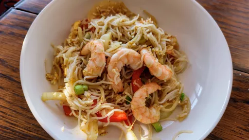

Singapore noodles with prawns

This low-fat, low-calorie version of your favourite stir-fried takeaway will be ready in 20 minutes and is packed with prawns and plenty of flavour
Servings: 2
Total: 20 mins
Ingredients
- 2 nests thin vermicelli rice noodles
- 1 tbsp light soy sauce
- 1 tbsp oyster sauce
- 2 tsp mild curry powder
- 1 tbsp sesame oil
- 1 clove garlic, chopped
- 1 red chilli, thinly sliced (deseeded if you don't like it too hot)
- thumb-sized piece ginger, grated
- 1 medium onion, sliced
- 1 red pepper or yellow pepper, cut into thin batons
- 4 spring onions, cut in half lengthways then into batons
- 8 raw king prawns
- 1 large egg, beaten
- coriander leaves, to serve
Instructions
- Soak the rice
noodles2 nests
in warm water for 5 mins until softened but still al dente. Drain and set aside.
- In a small bowl, mix together the
soy1 tbsp
, oyster sauce1 tbsp
and curry powder2 tsp
.
- In a large wok, add half the oil and fry the
garlic1 clove
, chilli1
and gingerthumb-sized piece
until golden, about 2 mins. Add the remaining oil, onion1 medium
, pepper1
, spring onions4
, prawns8
and noodles2 nests
and stir-fry for a few mins. Push everything to one side, add the egg1 large
and scramble. Add the soy1 tbsp
sauce mixture, toss again for a few more mins, then remove from the heat. Sprinkle over the coriander leaves before serving.
-
kcal
411
-
fat
10 g
-
saturates
2 g
-
carbs
54 g
-
sugar
10 g
-
fibre
6 g
-
protein
23 g
-
salt
2.6 g
www.bbcgoodfood.com
Short Link
Long Link